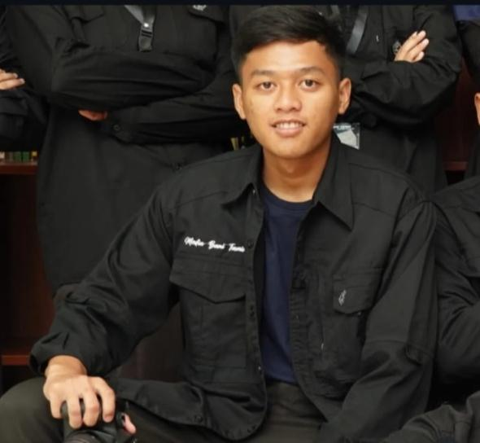

TENTANG SAYA

Halo, saya Ullynnuha Ramadhan. Saya adalah mahasiswa Teknik Informatika yang sedang mempelajari dunia teknologi, pemrograman, dan pembuatan website.
Saya suka mencoba hal baru dan belajar melalui project-project sederhana. Website ini saya buat sebagai portfolio sekaligus tempat untuk menampilkan hasil belajar dan project yang pernah saya kerjakan.